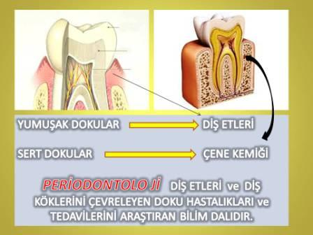
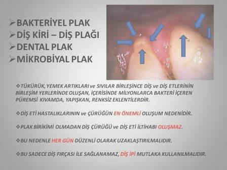
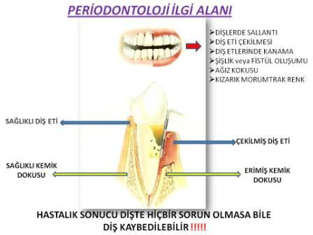
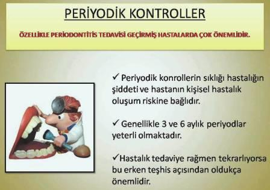

Periodontology
Periodontology is the main scientific discipline dealing with diseases of the tissues surrounding our teeth, namely the gums and the bone surrounding the tooth roots, and their treatment. People who have completed their doctorate in this field and received their specialization are called gum disease specialists, that is, periodontologists (periodontists).

What does periodontology do ? What is periodontology ? or What does periodontology deal with ?
The tissues surrounding our teeth consist of both hard and soft structures. These tissues are very important for our oral and dental health. Therefore, our oral and dental health is in a very close relationship with our general body health. To prevent a problem in our teeth or inflammation in our gums from progressing and causing tooth loss or negatively affecting our general health, it must first be correctly diagnosed and the necessary treatment applied, the results evaluated, and the continuity of the created healthy structure or stopped progression must be absolutely ensured. This is the primary goal and duty of the gum disease specialist, that is, periodontology.

Periodontal Diseases
If the inflammation is only in the soft tissue, that is, the gum, this is called gingivitis. However, when this inflammation progresses and begins to spread to the underlying bone tissue, it causes destruction in this bone. At this stage, the disease is called periodontitis. All these are called periodontal diseases.
Periodontal diseases can largely be stopped and brought under control. For this, only the dentist's effort is not sufficient. The patient must also participate in the treatment phase by performing adequate and effective oral, dental, and gum care. Because the most fundamental cause of this disease is bacteria. Bacteria can reach very high numbers in people with inadequate oral care and cause destruction. The microorganism communities formed by bacteria develop in a puree-like accumulation called bacterial plaque that accumulates just above the junction line of our teeth and gums, feed on food residues, multiply, and produce acid.
Periodontology and Bacterial Plaque
This puree-like, light yellow-colored attachment called bacterial plaque, microbial dental plaque, or dental dirt is the most fundamental cause of cavities, gum inflammations, and tartar formation on our teeth. This attachment must be removed from the mouth. This is achieved with extremely effective and continuous oral care.

Microbial Dental Plaque
The most important duty of a periodontology specialist and, of course, a dentist, in addition to diagnosing and treating the disease, is to give oral hygiene motivation to their patient and explain oral care correctly. Generally, people think that only tooth brushing is sufficient and sometimes complain about cavities and gum inflammation that occur despite regular tooth brushing habits.
Inflamed Gum Symptoms
In my opinion, the most important reason for this is not using dental floss in addition to tooth brushing. Because dental cavities and gum inflammation usually form faster in areas that the toothbrush does not touch or cannot reach.
Gum inflammations, which form the main area of interest for periodontology and gum disease specialists, first manifest themselves with bleeding in the gums and slight swelling, along with a change in the healthy gum color from rose pink to red. At this stage, the initial disorder can return to a healthy state with more effective oral care - which must definitely include dental floss - without dental intervention. However, if the inflammation does not improve, especially if the bleeding in the gums does not stop, then dental intervention becomes more appropriate. Because if the problem progresses, it will pass to the bone surrounding our tooth roots and cause bigger troubles.
Gum Bleeding
Bleeding is one of the first symptoms of gum inflammation. It usually occurs during brushing. However, if there is a complaint of gum bleeding without any cause, this problem needs to be examined more carefully. Different systemic disorders or blood diseases may underlie this.
When people with gum problems go to the dentist, first, a preliminary interview is conducted to obtain detailed information from the patient. In my opinion, this is a very important session. It is a valuable opportunity for our patient to get to know us and for us to get to know our patient. In this interview, the patient's systemic diseases, general health status, and complaints related to teeth and gums are tried to be learned. For example, in a person with diabetes, the risk of gum inflammation and the possibility of this inflammation causing faster destruction are high.
The dentist or periodontologist (periodontist) can detect possible relationships between systemic diseases and gums in this session. For example, the first symptoms of some systemic disorders can occur in the gums and oral mucosa.
When the inflammation in the gum progresses and reaches the underlying bone tissue, resorption begins in the bone tissue, and this resorption causes a decrease in bone height, resulting in reduced tooth support. When this event reaches much more advanced levels, it can result in tooth loss along with loose teeth.
How is Periodontology Treatment Performed?
Diagnosis of the Disease
In periodontology treatment, that is, in the treatment of gum diseases, the most important element depends primarily on making the correct diagnosis. For this purpose, preliminary information taken from the patient (anamnesis), clinical examination, and radiographic evaluations are utilized.
Informing the patient about the disease and oral care and making recommendations
A patient who knows the cause of gum diseases, the progression pattern of the disease, and the possible consequences will act more consciously in the stages of gum disease treatment and will be very effective in the success to be achieved. Doctor-patient cooperation is very important in the treatment of the disease. Treatment success will be much higher in a patient who knows the harms of bacterial plaque and how to clean it.
Professional Cleaning
All tartar around the teeth is cleaned with special tools and ultrasonic devices, and polishing (polishing) process is applied to the tooth surfaces. Depending on the degree of inflammation, in some cases, under locally applied anesthesia, a deep cleaning procedure called subgingival curettage is applied inside the gum pockets and on the root surfaces.
Antibiotic Treatment
In some cases, antibiotics are used to support the treatment performed. Especially in acute gum infections. Antibacterial mouthwashes are generally recommended.
Surgical Treatment
In more advanced gum inflammation cases, again under local anesthesia, the gums are lifted from the tooth surfaces and bone tissue, the root surfaces, the inside of the gums, and bone surfaces are cleaned of all inflammatory tissues, and in some cases, bone grafts and bone powders that help bone formation are placed, and the gums are sutured back to their original place.

Periodontal Examination
The success of periodontal treatments depends primarily on the quality of oral hygiene applied by patients. For this purpose, periodic check-ups are very important. The frequency of periodic check-ups depends on the severity of the disease and the patient's personal risk of disease formation. Usually, 3 and 6-month periods are sufficient. If there are symptoms such as the continuation or recurrence of the disease, the periodontology specialist or gum disease specialist will have the opportunity to intervene again in the early period without delay.
All Our Services
Contact Us.
Address
Avsallar Mahallesi Hamdi Cad. Meydan Konutları Sitesi B Blok No:2,
07410 Alanya/Antalya